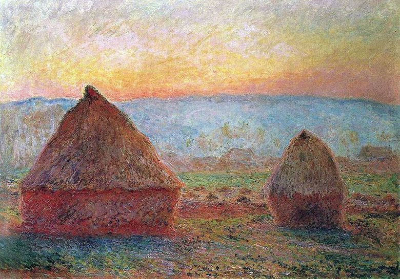
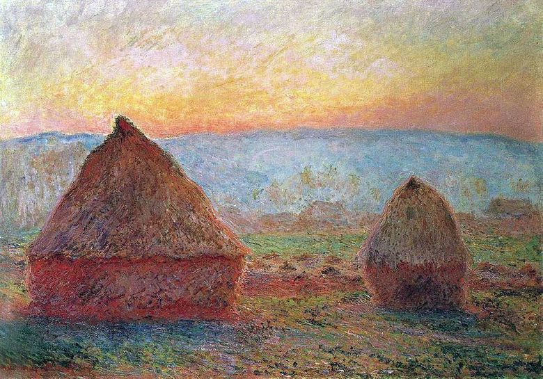

«Стога сена в Живерни. Закат»
 


Знаменитый художник Клод Моне долгое время жил в небольшой французской деревне Живерни, гуляя по окрестностям которой, он вдохновлялся идеями для своих картин. Однажды внимание художника привлекли обычные стога сена. В его голове созрела идея изобразить их в разное время суток и в условиях разной погоды. Всего Моне изобразил 15 картин. Он писал их летом, осенью и зимой, в середине дня и на закате, в ясную и пасмурную погоду. Серия картин "Стога сена" пользовались огромной популярность, несмотря на то, что у каждого полотна была высокая стоимость. Все 15 картин художник нарисовал всего лишь за 1 год (1889-1890 года). Сначала художник планировал создать две картины: одну с изображением стогов сена в ясный солнечный день, а вторую – при плохой погоде. Однако, он заметил, что освещение в течение дня постоянно меняется, поэтому решил создать целую серию рисунков. Серия полотен позволила декоративной композиции развиваться во времени. Самой большой популярностью среди всей серии пользуются полотна, написанные на закате. Одна из таких картин была создана в 1889 году. На ней изображён незатейливый сельский пейзаж: ровное поле и жёлтые стога сена. На заднем фоне виднеются деревенские дома, деревья и горы сизого цвета. Почитатели таланта художника восхищаются тёплыми красками, изобилующими на этой картине. На полотне заходящее солнце озаряет небо золотистыми оттенками, создаёт красно-оранжевые тени на траве и стогах. В этой работе художник по максимуму использовал тональность своей палитры.